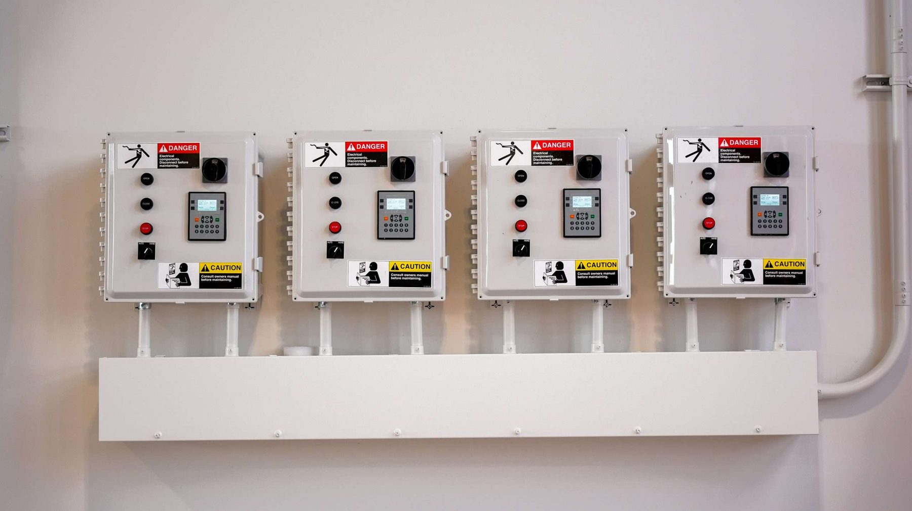

Structural glass walls — frameless, but never unengineered.
Point-supported and fin-supported glazing takes the frame out of the sightline and puts the engineering into the glass itself — the bolts, the hardware, and the calculation behind every hole. What the drawings should show before this gets priced. Written for architects and owners on lobby, clubhouse, and flagship-retail work.
Most glass is edge-supported. Point-supported glass isn't.
Storefront, curtain wall, and window wall systems all hold glass the same basic way: a frame captures the glass around its perimeter, and the frame carries the load back to the building structure. Point-supported glazing does something different. Instead of capturing the edge, the glass attaches directly to the structure through fittings that pass through holes drilled in the glass itself, or through fittings clamped at the joints between lites. The National Glass Association's technical bulletin on point-supported glazing frames it plainly: the industry moved this direction because of "the growing desire for larger openings and fewer impediments to the outside view."
Take the frame out of the sightline and what's left has to be structurally self-sufficient in a way framed glazing never has to be. That's the honest tradeoff: point-supported glass buys transparency, and it spends engineering rigor to get there. Fin-supported systems are a close cousin — structural glass fins, set perpendicular to the main glass plane, replace the mullions that would otherwise stiffen a tall glass wall against wind load, again keeping the view as clear as possible.
Point-fixing hardware — what shows up on the shop drawings.
All four hardware families are documented in the NGA's point-supported glazing technical bulletin and have been used successfully on both facade and canopy structures. Named hardware brands aren't listed here deliberately — hardware selection is a project-specific engineering decision, made with the structural engineer of record, not a catalog pick.
The glass itself isn't optional-grade — it's tempered or heat-treated laminated, full stop.
Per the NGA technical bulletin, vertical point-supported glazing uses monolithic or insulating units of fully tempered glass, or heat-treated (tempered or heat-strengthened) laminated glass. Sloped and overhead point-supported applications — canopies, skylights — require heat-treated laminated glass; most codes also require laminated glass on sloped glazing specifically so a broken lite retains its fragments rather than falling.
Drilling a hole through a lite of glass concentrates stress at the hole edge in a way flat, unpierced glass never experiences. The bulletin cites allowable stress at holes of roughly 9,700 psi for fully tempered glass and roughly 3,500 psi for heat-strengthened glass, per ASTM C1048 — figures the engineer of record uses to size glass thickness and hole geometry, not a number a sub picks off a table. Hole edges also have to be free of chips, shells, and other fabrication damage; a hole with edge damage that would be cosmetically irrelevant on a normal cut edge can be a real defect on a structural point-fixed lite.
This is deliberately not a page with specific thickness or hole-spacing recommendations. Those numbers depend on lite size, code-designated design loads, building location, and the specific hardware system — exactly the kind of project-specific engineering call the NGA bulletin says has to run through an engineer familiar with structural glass design, using finite element analysis where deflection or stress can't be hand-calculated.
Why this is an engineering-led process, not a glazing-crew process.
Everything below comes directly out of the NGA's point-supported glazing technical bulletin. It's a longer list than a typical storefront install because the failure modes are less forgiving:
Deflection changes the geometry
If glass deflects laterally more than half its own thickness under load, large-deflection, non-linear plate theory applies — a simple beam calculation isn't accurate anymore. Deflection also shortens the distance between point supports, so hardware has to allow for that motion, often with oversized or slotted holes.
Whole-structure behavior, not just the glass
The engineer of record has to understand how the entire structure the glass hangs from behaves under wind, seismic, and blast loading where applicable — and confirm the structure can accommodate the loads the glass wall imposes back on it.
Differential movement between adjacent elements
Floors and structural elements around a point-supported wall don't move in lockstep with it. The design has to preserve adequate bite and engagement at the glass edge even as adjacent elements deflect independently.
Overhead glazing carries extra risk
Canopies and glass roofs are more exposed to impact from falling or thrown objects than vertical walls, and overhead glass that breaks is more likely to actually fall out of the opening. That's the structural reasoning behind requiring laminated glass — or heat-treated glass with a mesh backup — on sloped and overhead point-supported applications.
Design redundancy against progressive failure
A well-engineered point-supported system is built so one connection or one lite failing doesn't cascade into the next. That redundancy has to be designed in from the start — it isn't something a sub can retrofit into a hardware package after the fact.
What we do about it
We treat point-supported and fin-supported scopes as engineering-led from day one — coordinating fabrication, hardware selection, and installation sequencing directly against the structural engineer's calculation package, not around it.

High-transparency envelope work, alongside our storefront and curtain wall base.
Point-supported and fin-supported structural glass walls typically show up on lobby, clubhouse, and flagship-retail projects where maximum transparency is the design goal — a segment adjacent to the storefront and curtain wall work ACG already prices across Florida, with ACG Nashville opening Q3 2026 for the Tennessee market. Our verified public-sector past performance — the Haines City Public Safety Complex & EOC (25,443 SF, GC Pirtle Construction, completed 2025), the Cudjoe Key fire station for Monroe County, and the Martin County Fire Training facility — is framed and storefront glazing, not point-supported systems; we're not going to claim otherwise. What that work demonstrates is the coordination discipline — shop-drawing review, structural coordination, and documentation rigor — that a point-supported scope demands at an even higher level.
Point-supported glazing questions architects and owners ask.
What is point-supported glazing?
Point-supported glazing attaches glass to the building structure through fittings that pass through drilled holes in the glass, or through fittings clamped at the joints between lites — instead of capturing the glass edge in a frame the way storefront or curtain wall systems do. It's used for both vertical facades and sloped or overhead applications like canopies and skylights, per the National Glass Association's technical bulletin on the subject.
Does point-supported glass require special glass, or is it the same as storefront glass?
It requires tempered or heat-treated laminated glass, not standard annealed glass — vertical applications can use fully tempered monolithic or insulating units, or heat-treated laminated glass; sloped and overhead applications require heat-treated laminated glass specifically, because a broken overhead lite is more likely to fall than a vertical one. Drilling the holes for the point fixings also concentrates stress at the hole edges, which the glass thickness and fabrication tolerance have to account for.
What's the difference between point-supported and fin-supported glass walls?
Point-supported glass attaches through discrete drilled fittings; fin-supported systems use structural glass fins set perpendicular to the main glass plane in place of metal mullions to stiffen a tall glass wall against wind load. Both approaches share the same goal — keeping the sightline as clear as possible — and both require the same rigor of engineering behind the glass.
Where does structural glass walling typically get used?
Most commonly on projects where maximum transparency is the design driver — corporate and hospitality lobbies, retail flagship storefronts, and high-end clubhouse or amenity buildings. It's a smaller, more specialized share of commercial glazing work than storefront or curtain wall, and the buyer is usually an architect or owner willing to pay for the engineering that comes with it.
Does ACG install point-supported structural glass walls?
ACG's verified public-sector past performance is storefront and curtain wall glazing, not point-supported systems, and we're not going to represent it otherwise. We do bring the shop-drawing coordination and structural-documentation discipline this scope demands. Send us the structural engineer's package and glass specification at connor@acglass.com and we'll give you a straight read on constructability and coordination before we quote. FL CGC #1531993.
Related pages
Sending a structural glass wall scope to bid?
Send Division 08 and the structural engineer's package to connor@acglass.com. We read the hardware and glass makeup against the calculation before we quote — not after award.